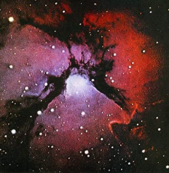
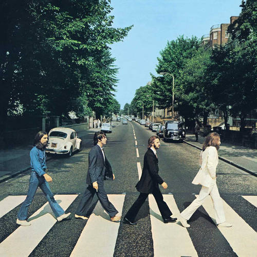

Ascultatul şi colecţionarea muzicii

Muzica are un rol important in viata fiecarui om. Cu totii o savuram zi de zi, apreciind impactul artistic pe care il are asupra noastra.
Ea reuseste sa fie un companion de rutina devotat, dar si un generator de atmosfera ambientala.
Totusi, muzica are o influenta cu mult mai mare de atat, mai ales asupra starii fizice si psihice.
Ascultatul muzicii a devenit pentru mine un element omniprezent si necesar. Pe langa audierea muzicii dintr-o gama variata de genuri, mai colectionez si CD-uri cu albumurile muzicale ale
artistilor mei preferati.
Ma pasioneaza urmatoarele genuri de muzica:
- Pop Rock,
- Classic Rock,
- Progressive Rock,
- Jazz,
- Jazz Fusion,
- BeBop,
- Ambiental,
- Electro Pop,
- Afro Beat,
- New Wave,
- Alternative,
- Brit Pop.
Cateva CD-uri din colectia mea:
| Denumirea albumului | Artist/Trupă
| Gen muzical | Copertă |
|---|
| Kind of Blue | Miles Davis |
Jazz | 
|
| Plastic Beach | Gorillaz | Alternative | 
|
| Islands | King Crimson | Progressive Rock | 
|
| Get Ready | New Order | New Wave | 
|
| Abbey Road | The Beatles | Pop Rock | 
|
| 604 | Ladytron | Electro Pop |
|